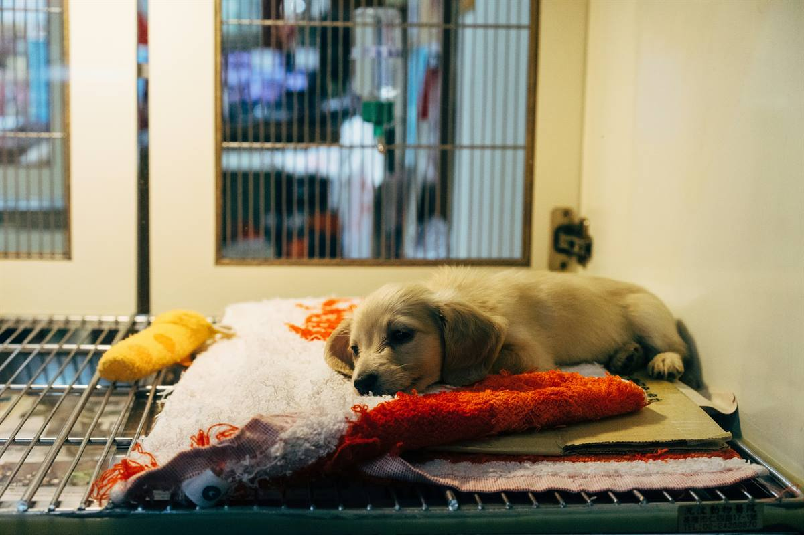
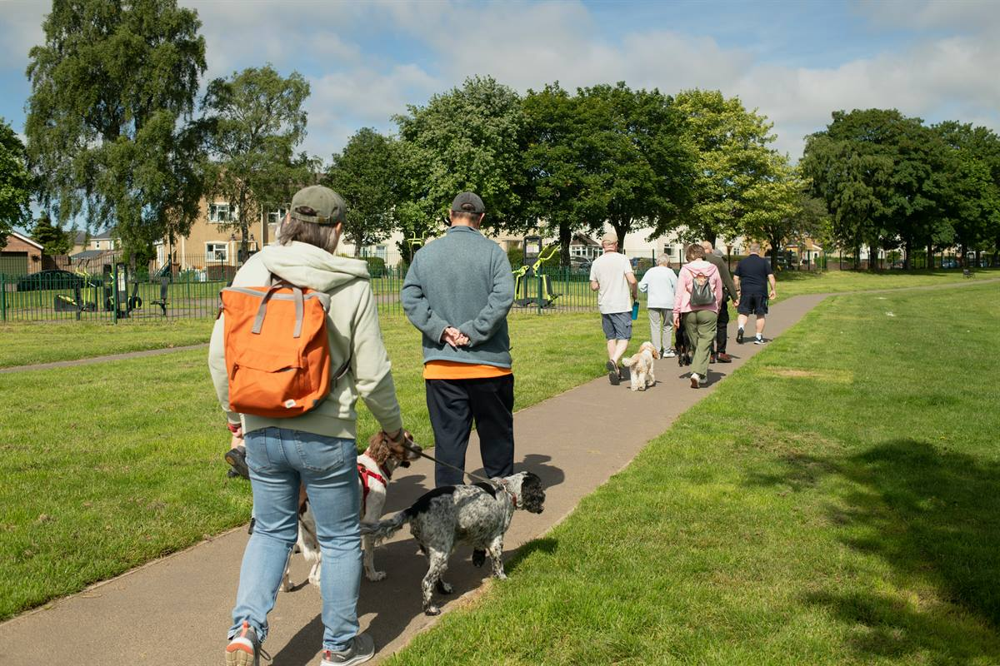

Nuestra historia

Amolosperros nació en 2014, cuando un grupo de vecinas y vecinos de la ciudad se juntó para atender a una camada de cachorros abandonada en la plaza. Lo que empezó como una colecta de mantas y alimento terminó siendo una asociación civil con personería jurídica.
Doce años después seguimos siendo los mismos vecinos, pero con un refugio propio, una red de hogares de tránsito y un acuerdo con tres veterinarias del barrio. Desde que arrancamos dimos en adopción más de 1200 animales.
Nuestra misión
Rescatar perros y gatos en situación de calle o de maltrato, darles atención veterinaria, castrarlos y conseguirles una familia responsable. Y, al mismo tiempo, trabajar con el barrio para que cada vez haya menos animales que rescatar.
Creemos que la adopción no termina el día de la entrega: hacemos seguimiento durante los primeros seis meses y acompañamos a las familias cuando aparece alguna dificultad.
Nuestra visión
Queremos una ciudad donde ningún animal viva en la calle y donde castrar sea algo normal, gratuito y al alcance de cualquier vecino. Para eso apuntamos a sostener las campañas de castración todo el año, no solo en temporada.
Les damos a los animales el tiempo que necesitan hasta que aparece alguien que los quiera.
Nuestro equipo

Somos 22 personas y nadie cobra un sueldo. Estos son los roles que sostienen el refugio:
- Coordinación general: organiza los turnos, las campañas y la relación con el municipio.
- Equipo de rescate: atiende los avisos de animales en riesgo y los traslada.
- Equipo veterinario: tres profesionales que atienden, operan y controlan los tratamientos.
- Red de hogares de tránsito: nueve familias que alojan animales en su casa.
- Equipo de adopciones: hace las entrevistas, las entregas y el seguimiento posterior.
- Equipo de comunicación: publica las fichas, las novedades y las rendiciones de cuentas.
- Tesorería: lleva las cuentas y publica los movimientos en Transparencia.
¿Querés sumarte? Escribinos desde Contacto o colaborá desde Asociate.